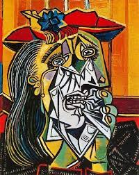
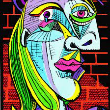

|  |
 |
Pablo Ruiz Picasso, né le 25 octobre 1881 à Malaga (Espagne) et mort le 8 avril 1973 à Mougins (Alpes-Maritimes, France), est un peintre, dessinateur, sculpteur et graveur espagnol2 ayant passé l'essentiel de sa vie en France.
Artiste utilisant tous les supports pour son travail, il est considéré comme l'un des fondateurs du cubisme avec Georges Braque et un compagnon d'art du surréalisme. Il est l'un des plus importants artistes du xxe siècle, tant par ses apports techniques et formels que par ses prises de positions politiques. Il a produit près de 50 000 œuvres dont 1 885 tableaux, 1 228 sculptures, 2 880 céramiques, 7 089 dessins, 342 tapisseries, 150 carnets de croquis et 30 000 estampes (gravures, lithographies, etc.)3. Parmi ses œuvres les plus célèbres figurent le proto-cubiste Les Demoiselles d'Avignon (1907) et Guernica (1937), une représentation dramatique du bombardement de Guernica pendant la guerre civile espagnole.
Pablo Picasso naît le 25 octobre 1881 au 36, place de la Merced (aujourd'hui no 15), à Malaga. Il est le premier enfant de José Ruiz y Blasco, alors professeur de peinture à l'école provinciale des Arts et métiers de la ville dite « San Telmo4 », et de María Picasso López, une fille de vignerons.
Son nom complet est Pablo Diego José Francisco de Paula Juan Nepomuceno María de los Remedios Cipriano de la Santísima Trinidad Mártir Patricio Ruiz y Picasso5.
Le nom de Picasso, qui n'est pas espagnol, serait selon certains auteurs d'origine italienne. Un de ses arrière-grands-pères est né à Sori dans la région de Gênes5. En revanche, selon Robert Maillard, la famille ne serait pas originaire d'Italie4,6. Pablo avait deux sœurs (Maria de los Dolores, dite « Lola », née en 1884, et Maria de la Concepción7, dite « Conchita », née en 1887), mais aucun frère8.
En 1891, le musée provincial de Malaga dont José Ruiz Blasco était le conservateur, ferme ses portes, ce qui oblige le père à trouver d'autres moyens de subsistance. La famille déménage à La Corogne et José Ruiz Blasco occupe un poste de professeur au lycée Da Guarda. La mort de sa sœur Conchita d'une diphtérie en janvier 1895 traumatise Picasso et son vœu d'arrêter la peinture si sa sœur avait guéri n'étant pas exaucé, il se réfugie dans son art9. Son père est alors nommé professeur à La Llotja de Barcelone, en 18958.
Une collection Mellon conservait en 1966 le portrait par Picasso d'une de ses sœurs daté de 1901